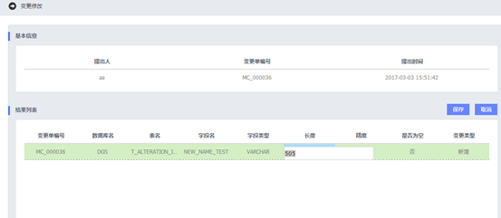
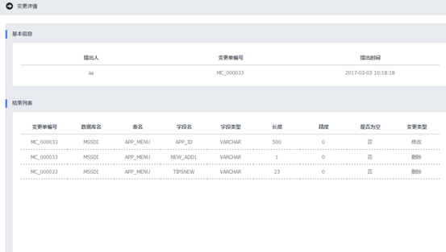

元数据管理系统用户使用手册
元数据管理系统用户使用手册
模型变更操作步骤：点击模型修改à进行修改à保存修改à模型变更à更分析与变更详情。
1. 进入模型变更管理模块，再点击这里的模型修改按钮进行模型修改。如下图。

模型变更的范围如下：
|
模型变更范围 | |||||||
|
表名 |
字段名 |
字段类型 |
长度 |
精度 |
是否为空 |
变更类型 |
|
2. 修改之后，可以点击保存按钮进行保存。
注意：想要进行模型变更之前，还必须进行“提交”操作，如果并没有提交，就直接模型变更，会提示，进行提交操作之后，才能进行模型变更，只有在提交操作之后，才能进行模型变更。
3. 回到模型变更管理页面，再点击模型变更按钮进行模型变更。生效之后，在查询列表的右侧，
4. 点击变更分析，会出现详情页，内容包括提出人，变更单编号，提出时间。
5. 点击变更详情，会出现详情页面，内容包括提出人，变更单编号提出时间，及变更所有属性。
